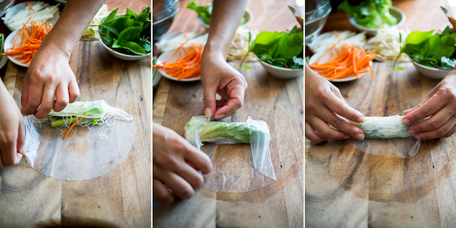

Hungry? Don't want to read? Click HERE
Tet, or Vietnamese New Year (also known as Lunar New Year or Chinese New Year), follows the lunar calendar, which is why the new year falls on a different date every year. This year, Tet is Friday, February 16th. In the many days, and even weeks, leading up to the new year, families prepare for this most celebrated of holidays by cleaning their homes, buying new clothes, paying back their debts, and cooking foods like banh chung to give away as presents or festive dishes like fried spring rolls, which often have lucky meanings behind them. (Fried spring rolls or egg rolls, for example, look like, and therefore represent, gold bullion, symbolizing prosperity.)
Tet is a week-long holiday in Vietnam. Here in the U.S., it is less of an affair since Vietnamese-Americans have adapted to the western working culture and rarely take off an entire week for New Year’s.
This doesn’t mean, however, there won’t be family gatherings in Vietnamese homes across the U.S. This weekend. If you’re looking to celebrate Vietnamese New Year this weekend, or just an excuse to have friends and family over for a big feast, I have the perfect meal plan for you.
One of my favorite dishes growing up is this bo chien bo—or beef pan-fried in butter. I was excited every time I saw my pops pull out the electric griddle from its box and mama mix together the ingredients for the stinky but delicious fermented anchovy dipping sauce. It’s a childhood memory I carried with fondness into my young adulthood, regularly making this very meal for friends in my new home after graduating college.
Much like Chinese hot pot, beef pan-fried in butter is a great communal dish where preparation is minimal and festivity is bountiful. At its very basic level, all you need is some thinly sliced steak, a table-center griddle, vegetables, rice vermicelli, rice paper, and a dipping sauce. I don’t even marinate the meat because I prefer tasting the essence of the beef cooked in good ol’ butter.
I like to add squid, shrimp, fish, or pork to the table, too, to ensure a variety. There’s something for everyone, and the best part is you don’t really have to do any of the cooking yourself. Just prepare the accoutrements, and let your guests cook their meats and wrap their own rolls.
I love the magic of communal dining experiences: a piping hot apparatus in the center of the table, everyone dodging elbows and chopsticks to fill their own bowls with colorful foods.
This Vietnamese New Year, invite those you love over, and share in this easy-to-prepare yet divine meal together. Happy cooking, and happy new year! Chuc mung nam moi!
Notes: You’ll need a grill for the table so that everyone can cook their own meats during the meal. You can opt for either the electric griddle or a cast-iron grill top that uses a portable burner. Also, note that this recipe is just a guideline—feel free to use whatever cut of beef you prefer, other seafood, or different vegetables. If the dipping sauce below using fermented anchovies is too strong, you can substitute with regular fish dipping sauce.
| Active time: 30m | Total time: 30m | Yields: 6 to 10 servings |
Click on the image below to watch a video on how to roll your own spring roll!
